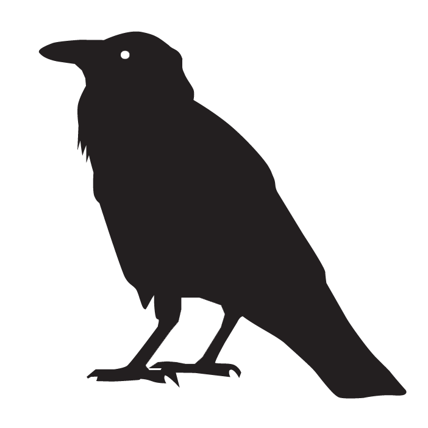
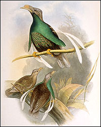
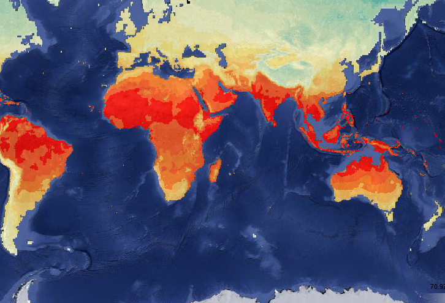

Spatial Ecology
web sites and applications
CliMAS Suitability
how climate change will affect terrestrial Australian vertebrates
CliMAS Biodiversity
how climate change will affect the biodiversity of terrestrial Australian vertebrates
CliMAS Reports
regional reports on climate change and biodiversity
Edgar
how climate change will affect Australian bird species
Wallace Initiative
sharing data on climate change, biodiversity and refugia
Climate Data
Downloadable climate data for many climate models and emission scenarios